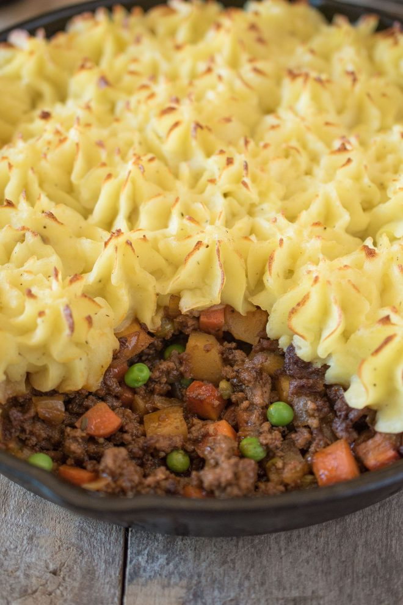

Shepherd's Pie

Description
This traditional Shepherd's Pie is a British comfort food classic loved by all. This is a classic recipe using
ground lamb cooked with vegetables and Guinness for an extra flavor boost, topped with fluffy mashed potato and
baked.
Ingredients
Potato topping
- 2 pounds potatoes, peeled and cut into wedges
- 4 tablespoons unsalted butter, melted
- 1/4 cup milk, warm
- 1/2 teaspoon salt, to taste
- 1/4 teaspoon freshly ground black pepper, to taste
Lamb filling
- 1 tablespoons vegetable oil
- 1 1/2 pounds ground lamb
- 1 teaspoon saly
- 1/4 teaspoon freshly ground black pepper
- 7 ounces yellow onion chopped
- 2 garlic cloves, peeled and grated or finely chopped
- 1 teaspoon fresh thyme
- 3 tablespoons tomato paste
- 1 pound carrots, peeled and diced small
- 6 ounce parsnip, peeled and diced small
- 1 cup frozen peas
- 3/4 cup Guinness
- 2 teaspoons Worcestershire sauce
- 1 cup beef stock, low sodium
Steps
For the potatoes
- To large pan add the potatoes, add cold water until the potatoes are covered and bring to a boil.
Turn down
to a low boil and cook for 20 minutes.
- Drain the potatoes in a colander, adn add back to the pan. Mash until smooth and add the butter,
milk,
sand, and pepper to taste. Mix well and set aside.
For the filling
- Preheat oven to 350 F
- Add vegetable oil to a 10-inch cast iron skillet over a medium-high heat and add 1/2 of the ground lamb.
(If the pan is too crowded, the meat will not brown, it will boil.)
- Season with half of the salt and pepper, saute until browned, breaking up the meat as it browns.
- Drain the meat keeping the fat in the pan and transfer to a bowl or plate and repeat with the other 1/2 of
the lamb, salt, and pepper.
- Turn the heat down to medium and add the onions to the browned lamb. Cook for about 5 minutes until
softend. Add garlic and thyme, cook for 3 minutes. Add tomato paste and mix well.
- Add the carrots, parsnip, peas, Guinness, Worcestershire sauce, and beef stock. Simmer for 20-25 minutes
until the liquid has reduced and the carrot and parsnip are tender. Taste for seasoning and add salt and
pepper if needed. Turn of the heat.
- Spread the potato mixture (or pipe with a pipping bag for a decorative look) over the meat mixture.Make
sure you make little peaks so they get a nice brown color in the oven.
- Place the pan onto a baking sheet and bake in the oven for 25 minutes or until the top is golden brown.
- Remove from the oven and allow to sit for 10 minutes before serving.